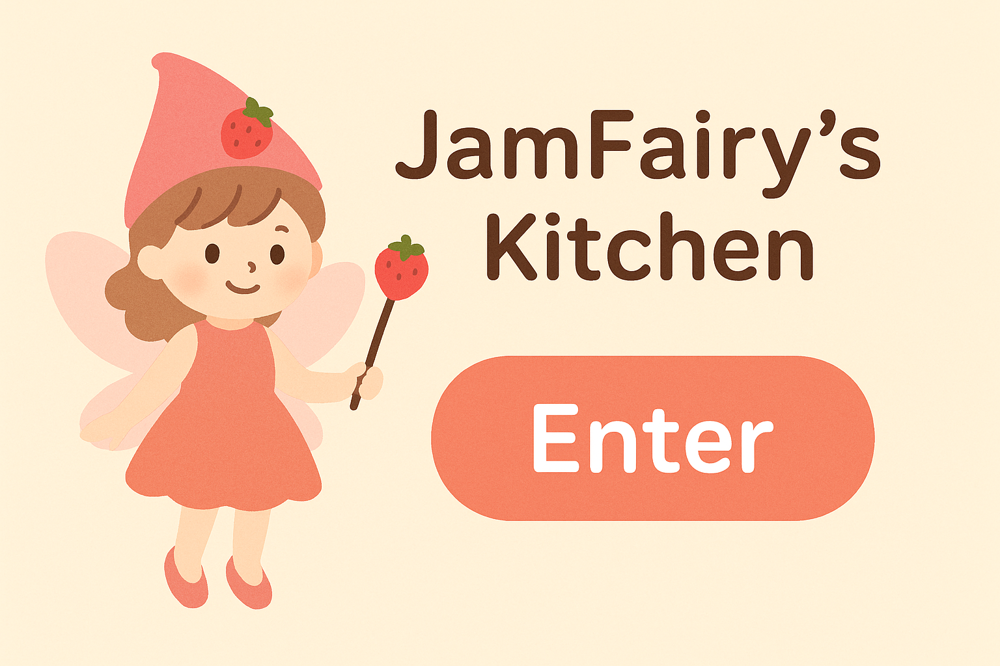

ジャム作りをもっと楽しく、もっと便利に。
下の画面からスタートできます！

原材料と希望糖度を入力すると、必要な砂糖量やレシピが自動で算出され、一括表示も作成できます。
このアプリのレシピは、個人が趣味と商品開発の目安として共有するものです。
販売目的での製造・販売には、地域の保健所や関係機関による
製造許可・設備・衛生基準の確認 が必要です。
本アプリの利用によって生じた損害や不具合について、開発者は責任を負いません。